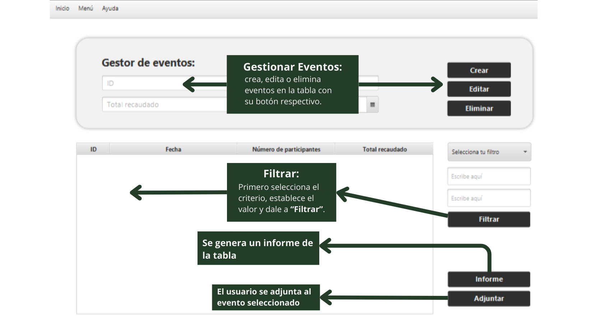

Esta es la ventana de Tiendas:

Funcionalidades Principales:
- Formulario de Gestor de Tiendas: Permite crear, editar o eliminar tiendas en la tabla.
- Crear Tiendas: Rellenar los campos en el formulario y hacer clic en "Crear".
- Editar Tiendas: Seleccionar una tienda en la tabla, realizar las ediciones en el formulario y hacer clic en "Modificar".
- Eliminar Tiendas: Seleccionar una tienda y hacer clic en "Eliminar".
- Tabla: Muestra todas las tiendas, los cambios se reflejan desde el formulario.
- Formulario de Filtrado: Permite filtrar tiendas según criterios específicos. Hay que seleccionar el criterio en el desplegale y después darle al botón "Filtrar"
- Funcionalidad Adicional: Hacer clic en "Informe" para generar un documento con datos de tiendas.
Recuerda que puedes utilizar los elementos de la barra de menú para navegar a otras secciones:
- Inicio: Volver a la pantalla de inicio.
- Menú: Acceder a diferentes secciones como Perfil, Productos, Eventos y Cerrar Sesión.
- Ayuda: Acceder a la sección de ayuda.